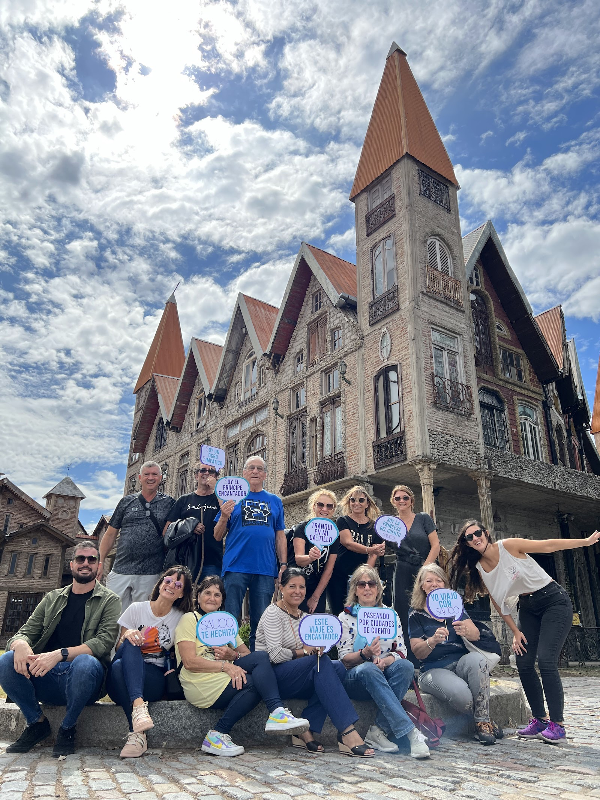

Coordinadoras que viajan con el grupo
Las reseñas las nombran una por una: Nati, Joa, Leo y Sofi, pendientes del grupo las 24 horas y atentas a todos los detalles.
NatiJoaLeoSofi
Rosario · salidas grupales acompañadas
Coordinadoras pendientes del grupo las 24 horas y un guía que cuenta la ciudad por dentro. El viaje arranca y termina en Rosario.
5,0 65 reseñas en Google
Lunes a viernesde 9:30 a 17:30
En cada salida el grupo lleva sus propios carteles de globo de diálogo. De ahí salen los colores de esta página.

Yo viajo con Sauco
Las reseñas las nombran una por una: Nati, Joa, Leo y Sofi, pendientes del grupo las 24 horas y atentas a todos los detalles.
NatiJoaLeoSofi
Octavio, el guía que mencionan dos reseñas, suma relatos y secretos de cada lugar. Una pasajera destacó su inmensa paciencia.
Una reseña lo dice así: se disfruta desde la salida de Rosario hasta el regreso.
Si el grupo existe, la agencia arma el viaje sobre ese armado. La cantidad de pasajeros y el destino se definen con ellas.
Quiero destacar la excelente organizacion, dedicacion, alegria y calidez con la que nos acompañaron Nati, Joa, Leo y Sofi, siempre atentas en todos los detalles.
Cumplieron el contrato punto por punto, esto en lo que se refiere a lo legal.
Viajar a New York fue maravilloso, disfrutamos desde la salida de Rosario hasta el regreso. Fue una fiesta compartir con un grupo con tanta buena onda.
A consultar
Preguntá qué salida se está armando, cómo se viaja y qué queda por confirmar.
Se cotiza por grupo
Si el grupo ya existe, la agencia arma el viaje sobre ese armado.
Se conversa en el momento
Un llamado para contar qué viaje tenés en la cabeza y qué opciones hay.